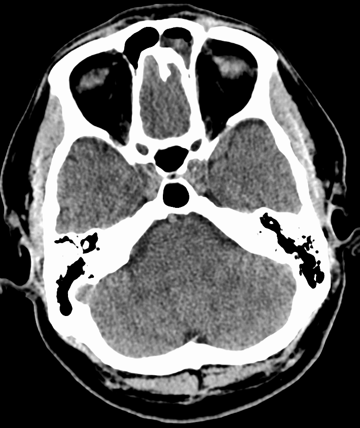

Ficha del catálogo
Sinusitis aguda
- Sistema
- Cabeza y cuello
- Modalidad
- TC
- Región
- Senos paranasales
- Dificultad
- Básico
Es la inflamación aguda de la mucosa de los senos paranasales, en la mayoría de los casos de origen viral y autolimitada. Cursa con obstrucción nasal, rinorrea, dolor facial y alteración del olfato de menos de cuatro semanas de evolución. La imagen no es necesaria en el cuadro no complicado y se reserva para sospecha de complicación o falta de respuesta al tratamiento.
Técnica
La tomografía sin contraste con cortes finos y reconstrucciones coronales es el estudio de elección para valorar los senos y el complejo osteomeatal. Se emplea ventana ósea para el hueso y ventana de partes blandas para el contenido. Se añade contraste ante sospecha de complicación orbitaria o intracraneal.
Qué observar
- Niveles hidroaéreos y ocupación parcial o total de los senos
- Engrosamiento mucoso circunferencial y su grosor
- Permeabilidad del complejo osteomeatal y del receso frontal
- Integridad de las paredes óseas y de la lámina papirácea
- Signos de extensión orbitaria: Celulitis, absceso subperióstico
- Signos intracraneales: Colecciones epidurales, trombosis de senos venosos
Hallazgos
El hallazgo más característico es el nivel hidroaéreo en un seno con engrosamiento mucoso asociado, habitualmente en el seno maxilar. La obstrucción del complejo osteomeatal explica la afectación combinada de maxilar, etmoides anterior y frontal. Las paredes óseas se mantienen íntegras en el cuadro no complicado, sin esclerosis, que sugeriría cronicidad.
Perlas
Los hallazgos de ocupación sinusal son muy frecuentes en tomografías realizadas por otros motivos y en cuadros virales banales, por lo que carecen de valor sin correlación clínica; el estudio debe centrarse en confirmar o excluir complicaciones y en definir la anatomía cuando se planea cirugía.
Diagnóstico diferencial
- Rinosinusitis crónica
- Predomina el engrosamiento mucoso sin niveles, con esclerosis y remodelación de las paredes óseas.
- Sinusitis fúngica invasiva
- Aparece en inmunodeprimidos con infiltración de la grasa periantral, necrosis mucosa y destrucción ósea.
- Pólipo antrocoanal
- Es una lesión expansiva única que sale del seno maxilar hacia la coana ampliando el ostium.
- Mucocele
- Produce expansión y adelgazamiento de las paredes del seno con contenido homogéneo y sin nivel.
Simuladores
- Retención de secreciones en paciente intubado o encamado
- Quiste de retención mucoso de contorno redondeado
- Hallazgo incidental en un cuadro viral banal
Por modalidad
- TC
- Define la anatomía ósea, el complejo osteomeatal y las complicaciones orbitarias con gran detalle.
- US
- Tiene un papel muy limitado, restringido a la valoración superficial del seno maxilar en algunos contextos.
Protocolo
Tomografía de senos paranasales sin contraste con cortes de un milímetro y reconstrucciones coronales y sagitales en ventana ósea. Se aplica la menor dosis compatible con el diagnóstico, especialmente en niños. Se añade contraste intravenoso y estudio de encéfalo si hay sospecha de extensión orbitaria o intracraneal.
Clasificación
Se distingue por duración en aguda de menos de cuatro semanas, subaguda entre cuatro y doce semanas y crónica por encima de doce semanas. La complicación orbitaria se estadifica en celulitis preseptal, celulitis orbitaria, absceso subperióstico, absceso orbitario y trombosis del seno cavernoso.
Errores frecuentes
- Sobrediagnosticar sinusitis por hallazgos incidentales sin clínica
- No revisar la órbita y el contenido intracraneal en el paciente febril
- Confundir un quiste de retención con ocupación inflamatoria activa

sinusitis senos paranasales nivel hidroaéreo complejo osteomeatal tomografía órbita complicación